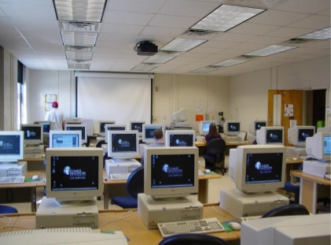

-

1960
Seymour Papert e suas pesquisas sobre inteligência artificial, processos cognitivos e tecnologias educacionais. Sonhou com o aprendizado autônomo das crianças com apoio do computador em ambientes especialmente projetados para elas, embora os primeiros computadores pessoais só aparecessem 25 anos depois. Suas ideias (movimento maker, STEAM, robótica educacional, aprendizado por games…) ocuparam o primeiro plano das discussões sérias de educação e tecnologia por muito tempo.
- Computer Assisted Instruction - CAI: monitoramento controlado via máquina
- Linguagem LOGO: linguagem para comandar cursor com o propósito de ensinar ao cursor novos procedimentos além dos que ele já conhece, a fim de criar desenhos ou programas.
-

1970
Época de descobertas de novos recursos para o ensino: transparências, retroprojetores, projetores de slides, gravadores de rolo, filmes em super-8. Crescimento do rádio como fonte de difusão do ensino no Brasil por meio do projeto Minerva, criado em 1970 pelo governo militar que lançou as bases para que o programa Telecurso (ensino pela tevê) fosse criado na década seguinte.
- Sistemas Tutores Inteligentes (STI): capazes de, por meio da interação com o usuário, atualizar sua própria base de conhecimento sobre o aluno (modelo do aluno), reconhecer o seu estado, diagnosticar o seu conhecimento, além de aprender, adaptar e aplicar diferentes tipos de estratégias de aprendizagem.
-

1980
Primeiros computadores pessoais com monitores monocromáticos de baixa resolução e ferramentas de escritório tais como processadores de texto, apresentações e planilhas. A linguagem BASIC vinha nativa em algumas máquinas convidando à criação de joguinhos educacionais que não dependessem de efeitos gráficos.
- Projeto EDUCOM: primeiro projeto público a tratar da informática educacional, agregou diversos pesquisadores da área e teve por princípio o investimento em pesquisas educacionais.
- World Wide Web (WWW) e ARPANET: sistemas criados para ligar as universidades entre si e para que os trabalhos e pesquisas acadêmicos fossem utilizados mutuamente em um ambiente de contribuição dos lados envolvidos.
- Projeto PRONINFE: desenvolvimento da informática educativa no Brasil através de projetos e atividades apoiados em fundamentação pedagógica, apoiava o desenvolvimento e a utilização da informática em vários níveis e o foco era a capacitação contínua e permanente dos professores.
- Comunidades Virtuais de Aprendizagem
-

1990
As escolas mais abastadas investiram na montagem dos laboratórios, com monitores policromáticos, leitores de CD-ROM e caixas de som. Em algumas redes de ensino, optou-se pelo ensino técnico por meio de uma disciplina específica voltada para o ensino de planilhas e editores de texto, junto a alunos do ensino fundamental e médio. O compartilhamento de softwares se dava por shareware. Não havia conectividade entre os computadores, mas surgiram as experiências com BBS (computadores ligados a um computador central por meio da linha telefônica), que foi o prenúncio da Internet.
- Redes sociais: A primeira rede social surgiu em 1995 nos Estados Unidos e Canadá, chamada Classmates, com o objetivo de conectar estudantes da faculdade. Desenvolveram-se posteriormente Twitter, Myspace, Orkut. Facebook e LinkedIn.
- Projeto PROINFO: criado pelo Ministério da Educação em 1997 para promover o uso da tecnologia como ferramenta de enriquecimento pedagógico no ensino público fundamental e médio, com a intenção de formar 25 mil professores e atender a 6,5 milhões de estudantes, através da compra e distribuição de 100 mil computadores interligados à Internet.
-

2000
A Internet aparece como promessa de revolução no ensino devido ao acesso à infinidade de informações, possibilidades de comunicação múltiplas, recursos gráficos ilimitados, etc
- Computação em Nuvem: maior apoio do professor aos estudantes e maior comunicação entre as partes envolvidas, além da elaboração de planos de aulas, calendários escolares, notas, organização de documentos, provas e trabalhos na própria nuvem.
- Internet das Coisas: rede de objetos físicos capaz de reunir e transmitir dados, podendo ser utilizada para o processo de ensino-aprendizagem.
-

2010
Proliferação de redes sociais e aplicativos de mensagens instantâneas. Celulares e computadores pessoais tornaram-se parte da aula.O ensino híbrido começou a ocupar lugar nas escolas encurtando as aulas presenciais.
- WEB 2.0: aproveitamento da inteligência coletiva de uma rede de informações onde cada usuário pode, além de usufruir, contribuir com ela.
- Banco Internacional de Objetos Educacionais: portal para assessorar o professor onde estão disponíveis recursos educacionais gratuitos em diversas mídias e idiomas (áudio, vídeo, animação/simulação, imagem, hipertexto, softwares educacionais) que atendem desde a educação básica até a superior, nas diversas áreas do conhecimento.
- Crescimento das Redes Sociais: surgimento do Facebook e do LinkedIn. Fóruns de discussões e espaços para debate utilizando tecnologias como grupos em sites de redes sociais e plataformas educacionais.
-

Dias Atuais
O computador passa a ocupar todos os espaços, a contragosto das pessoas e modelos mais resistentes. Ensino superior e ensino básico são mergulhados na tecnologia digital sem estarem preparados.
- Tecnologias e métodos inovadores: game-based learning, crowdfunding for research and education, flipped classroom, e-learning, project-based learning, blended learning, adaptive testing, adaptive learning, microlearning.
- Realidade Aumentada: utilização de projeções gráficas que contribuem com o entendimento do conteúdo educativo.
- Comunicação por Vídeo: uso de debates e transmissões ao vivo (hangouts), videoaulas, animações, chamadas e produções de vídeo.
- Smartphone na Sala de Aula: acesso a livros digitais, realidade aumentada, jogos educacionais, animações, videoaulas, resolução de questões e outros recursos digitais
- Geração de Dados e Personalização do Ensino: gerenciamento de dados educacionais para a criação de modelos de ensino personalizados de acordo com o conhecimento e ritmo de estudos de cada estudante a fim de potencializar os seus pontos fortes e minimizar as suas dificuldades.
-
Referências
BARBOSA, Ronaldo. Breve história da tecnologia educacional, de 1950 a 2020. Disponível em: https://ronaldobarbosa.pro.br/2020/06/21/breve-historia-da-tecnologia-educacional-de-1950-a-2020/ Acesso em: 21/02/2021.
ELIA, Marcos da Fonseca. A História da Informática na Educação no Brasil: uma narrativa em construção. Disponível em: https://ieducacao.ceie-br.org/historiainformaticaeducacao/#resumo Acesso em: 21/02/2021.
ERAILSON, Sebastião. Histórico de Software Educativo - SE. Disponível em: https://informaticaaplicada.webnode.com.br/products/historico-de-software-educativo/ Acesso em: 21/02/221.
Novas Tecnologias na Educação - Confira 5 tendências para aplicar na sua escola. Disponível em: https://sae.digital/novas-tecnologias-na-educacao-tendencias/ Acesso em: 21/02/2021.
TAVARES, Neide Rodriguez Barea. História da informática educacional no Brasil observada a partir de três projetos públicos. Disponível em: http://www.apadev.org.br/pages/workshop/historiaInf.pdf Acesso em: 21/02/2021.